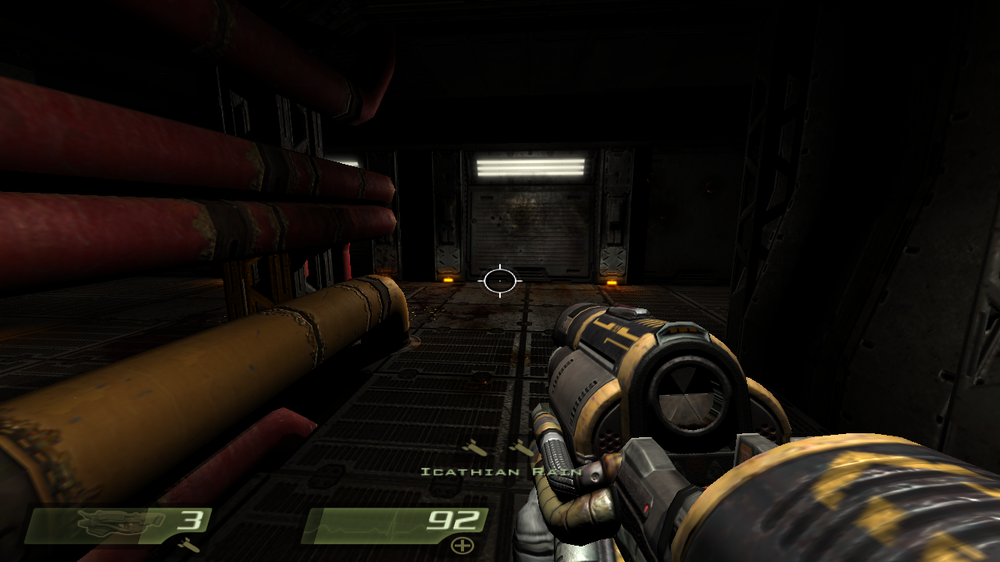
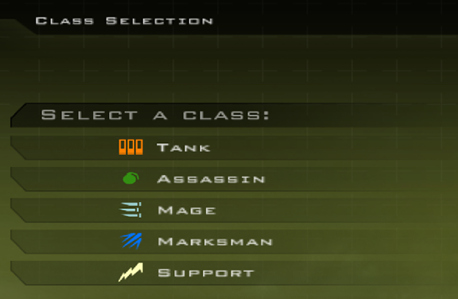
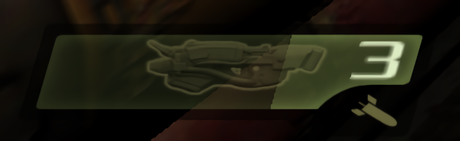

Quake 4 Mod
League of Quake
This is a mod for the game Quake 4, originally released in 2005 by Raven Software and id Software. The theme of this mod is League of Legends in Quake 4. Currently, there are 5 different classes, each with two upgradable abilities. The player also gains experience and gold upon killing enemies. All of these stats and selections also persist through levels and get saved/loaded from save files! One of the most challenging parts of this mod was having a buy menu pop up so the player could purchase items and upgrade their abilities. It was my first dive into what true game production looks like, and helped me develop the other projects on this page.
Features
Custom Selection Menus

By far the most complicated part of the project, these menus are the thing I'm most proud of for this project. I took seemingly scrapped code for an item shop from the multiplayer mode code and reverse engineered it in order to figure out how it worked. Then, I rewrote parts of it in order to make it work in single player. I made two separate selection windows: one for class selection, and one for the item shop. Again, this was one of the most technical changes in this entire mod and it feels so good to have gotten it working how I wanted it to!
Classes
When the player first spawns in, they must select a class. Each class has two abilities and different stats, such as health and damage. The available classes implemented are Tank, Assassin, Mage, Marksman (my personal favorite), and Support.
Abilities

Every class has two abilities, each modifying some aspect of weapons originally in Quake 4 in order to theme them similar to abilities in League of Legends. Instead of listing them all in text, here's a table that describes them:
| Ability Name | Ability Description | |
|---|---|---|
| Tank | Purge (Urgot W) | Slows player while firing, gives 50 temporary armor while firing. |
| Adaptive Defenses (Camille Passive) | Melee attack, gives 5 armor boost on attack. | |
| Assassin | Shunpo (Katarina E) | Teleport behind target enemy and deal damage. |
| Backstab (Shaco passive) | Melee attack, does double damage when behind an enemy. | |
| Mage | Plasma Fission (Vel'Koz Q) | Shoots a projectile that then splits when hitting something or reaching the end of its travel. |
| Bouncing Bomb (Ziggs Q) | Projectile that bounces up to 3 times, exploding on enemy contact or at the end of the final bounce. | |
| Marksman | Volley (Ashe W) | Shoots out 6 rockets in a cone. |
| Icathian Rain (Kai'Sa Q) | Shoots 6 homing rockets at nearby enemies. | |
| Support | Dark Binding (Morgana Q) | Slower rocket that roots a hit enemy for 4 seconds. |
| Astral Infusion (Soraka W) | Grenade, heals all allies in the explosion area for 25 health. Also damages enemies for the same amount. |
Item Shop & Gold
Shop text
Experience
Exp text (plus upgrade table)